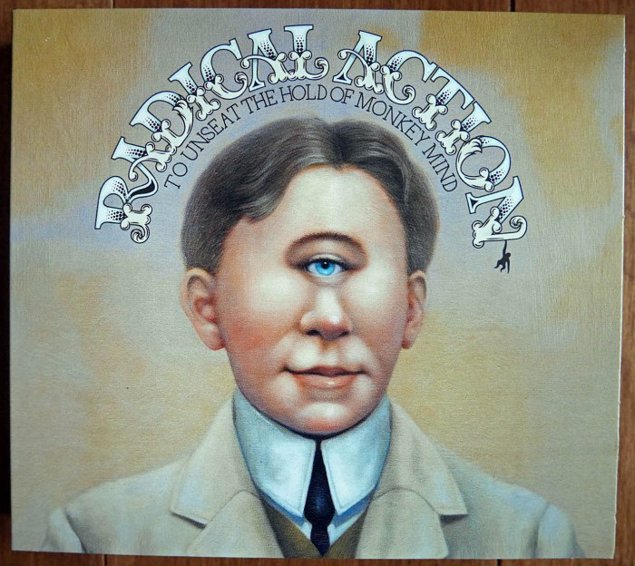
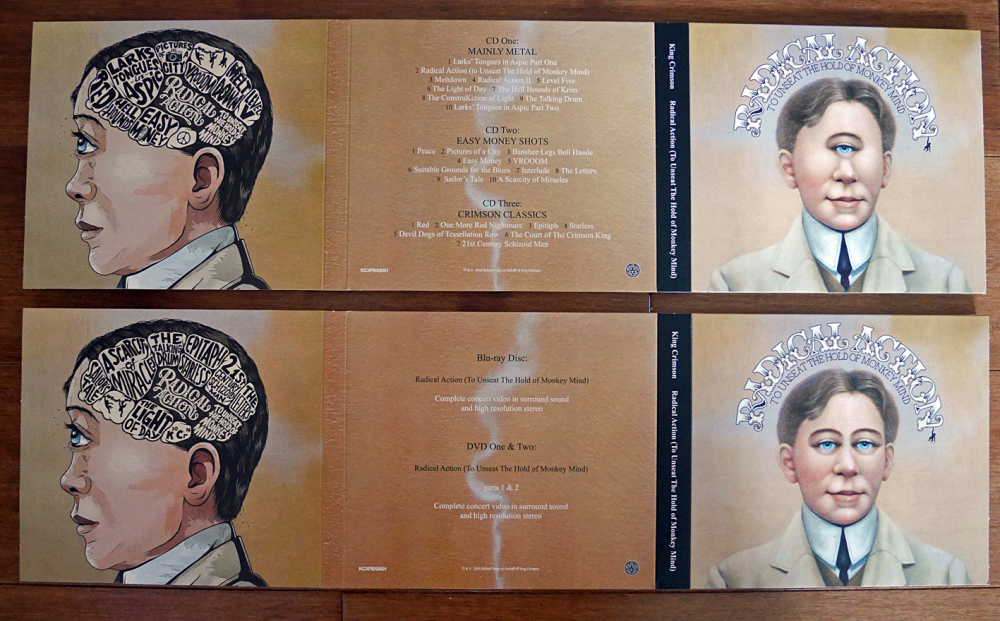
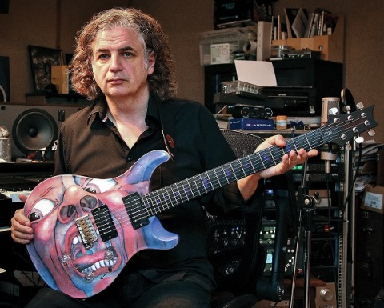
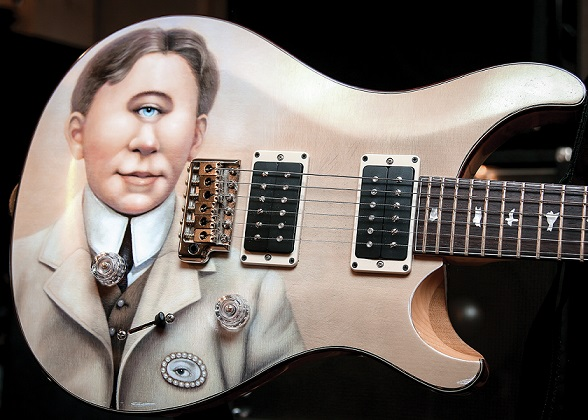
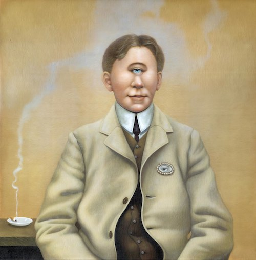

|

Radical Action (to Unseat The Hold of
Monkey Mind)
[Acción radical (para desbancar el dominio de la mente del mono)]
Caja de
6 discos editada en septiembre de 2016:
* 2 DVD con performance en vivo en Japón de diciembre de 2015
* 1 Blue Ray con la misma performance
* 3 CD de audio con piezas grabadas en vivo durante 2015 en UK,
Japón y Canadá.
Espléndido album triple. Derroche de virtudes y de nostalgia.
Clásicos reinventados, magistralmente interpretados.
|
Formación |
| Robert Fripp: guitarras,
teclados |
| Mel Collins: saxos, flauta |
| Jakko Jakszyk: guitarras, voz |
| Tony Levin: bajo, stick |
| Gavin Harrison: percusión |
| Pat Mastelotto: percusión |
| Bill Rieflin: percusión, teclados |
|
|
|
|
CD'S DE AUDIO |
|
|
|
|
|
| CD 1: Mainly metal |
CD 2: Easy money shots |
CD 3: Crimson classics |
| 1.- Lark's tongues in aspic I |
1.- Peace |
1.- Red |
| 2.- Radical action (to unseat...) |
2.- Pictures of a city |
2.- One more red nightmare |
| 3.- Meltdown |
3.- Banshee legs bell Hassle |
3.- Epitaph |
| 4.- Radical action II |
4.- Easy money |
4.- Starless |
| 5.- Level five |
5.- VROOOM |
5.- Devil dogs of Tessellation row |
| 6.- The light of day |
6.- Suitable grounds for the blues |
6.- The court of the Crimson King |
| 7.- The hell hounds of Krim |
7.- Interlude |
7.- 21st Century schizoid man |
| 8.- The construKction of light |
8.- The letters |
|
| 9.- The talking drum |
9.- Sailor's tale |
|
| 10.- Lark's tongues in aspic II |
10.- A scarcity of miracles |
|
Notas
- A los registros se les quitó el sonido de la audiencia, por lo que
aparentan ser grabaciones en estudio (algo similar a lo hecho en parte con
los álbumes "Starless and bible black" y "Red", ambos
de 1974).
- Hay 2 temas de los '90 (VROOOM y The construKction of light),
uno de 2003 (Level five), 8 nuevos, 2 de "A scarcity of
miracles" (el homónimo y The light of day; no son originalmente
de un disco firmado como King Crimson, sino como King Crimson ProjeKct). Los
14 restantes son de la primera época (entre 1969 y 1974), la mayoría no
tocados desde entonces. No
hay temas de los '80.
- Los temas nuevos: se destacan los 3 enganchados Radical
action/Meltdown/Radical action II; el del medio tiene entretejido de
guitarras del tipo de la pieza Discipline de 1981, que inició ese
estilo; las otras dos partes son crimsonianas clásicas. Suitable grounds for the blues
es un rock ablusado del tipo Ladys of the road de 1971, en el cual
tocó Mel Collins su saxo rabioso, como en este nuevo tema. Interlude es una pequeña
improvisación que sirve de intro a otra pieza, algo habitual en las
presentaciones en vivo del KC de 1973/74. Los otros 3 temas son percusivos,
interpretados solo por los 3 bateristas.
- Las pinturas del arte gráfico son de Francesca Sundsten, quien falleció
enferma en agosto de 2019. Página con su bio y pinturas: https://www.hallspassov.com/francesca-sundsten

 
Arriba, guitarras de Jakko, con toda la historia.

|
 Radical Action
Radical Action